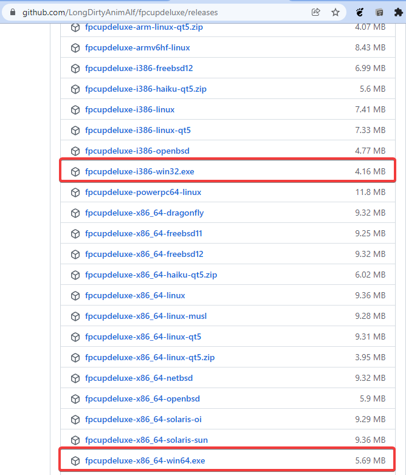
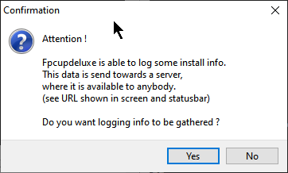
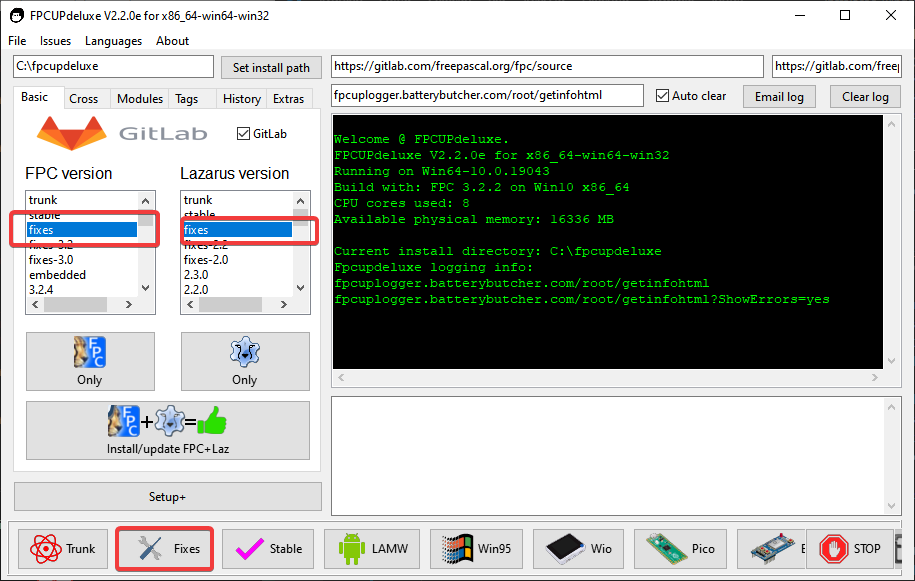
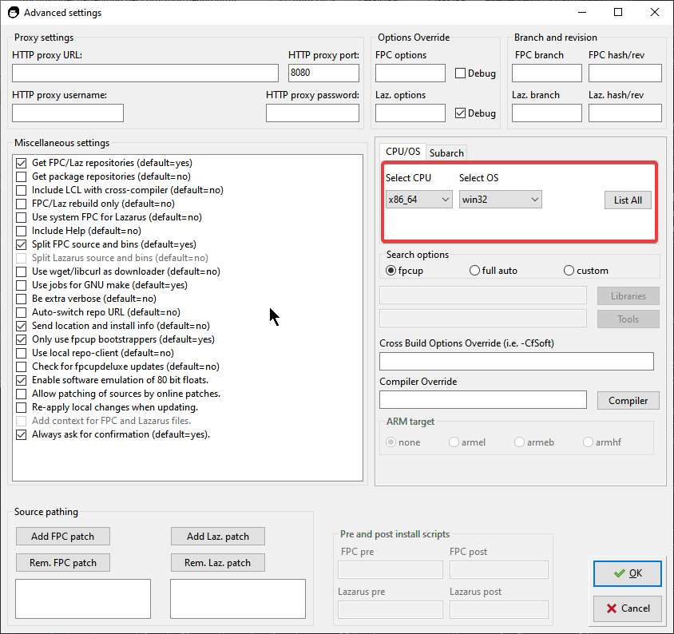

Embora uma instalação manual seja simples, o uso do fpcupdeluxe traz vantagens significativas. Este método permite uma instalação homeuser, o que significa que não precisamos de permissões de administrador para instalar, configurar ou usar o ambiente. Além disso, o programa baixa e compila o FreePascal (FPC) e o Lazarus otimizados para o seu processador específico.
Visite a página de releases no GitHub:
https://github.com/LongDirtyAnimAlf/fpcupdeluxe/releases

todo: gravar imagem de http://gladiston.net.br/wp-content/uploads/2022/01/instalacao_windows_fpcupdeluge1.png para assets/img/instalacao_windows_fpcupdeluge1.png
Dica de Arquitetura: A versão 64-bits pode compilar para 32-bits (cross-compile). No Windows, manter o suporte a 32-bits ainda é vital para aplicações comerciais devido à compatibilidade com sistemas legados e DLLs específicas.
Passo a Passo da Instalação
Passo #1: Execute o fpcupdeluxe.exe. Caso surja o aviso de telemetria, responda "Yes" se desejar ajudar os desenvolvedores com dados anônimos.

todo: gravar imagem de http://gladiston.net.br/wp-content/uploads/2022/01/instalacao_windows_fpcupdeluge2.png para assets/img/instalacao_windows_fpcupdeluge2.png
Passo #2: Selecione a opção fixes para FPC e Lazarus. Clique em Install/update FPC+Laz. O instalador gerenciará o processo automaticamente.

todo: gravar imagem de http://gladiston.net.br/wp-content/uploads/2022/01/instalacao_windows_fpcupdeluge3.png para assets/img/instalacao_windows_fpcupdeluge3.png
Passo #3 (Opcional): No botão Setup+, você pode definir critérios avançados, como o alvo (target) das suas compilações.

todo: gravar imagem de http://gladiston.net.br/wp-content/uploads/2022/01/instalacao_windows_fpcupdeluge4.png para assets/img/instalacao_windows_fpcupdeluge4.png
Passo #4: Inicie a instalação. Prepare-se, pois o processo de compilação é demorado.
Configuração Importante
Ao final, use sempre o atalho Lazarus_fpcupdeluxe. Ele contém o parâmetro essencial --pcp, que direciona as configurações para a pasta local:
--pcp=C:\pasta\de\instalacao\do\lazarus\configs
Vantagens da IDE 64-bits
Uma IDE 64-bits quebra o limite de 4GB de RAM, permitindo performance superior e o gerenciamento de projetos complexos. Contudo, lembre-se que componentes que usam DLLs em tempo de design (como o Zeos) exigirão que as respectivas DLLs também sejam de 64-bits.